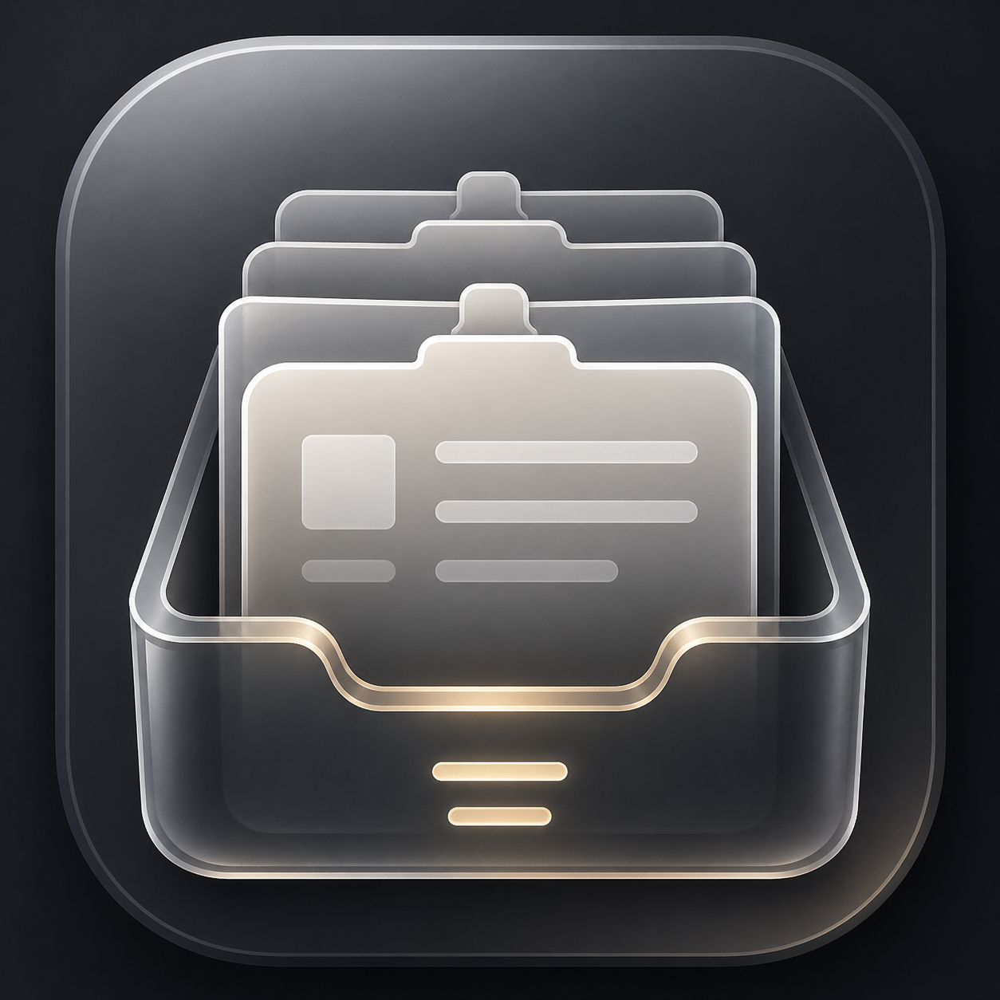

Text, images, videos, and files
ClipSpot groups clipboard history by content type, so the thing you copied five minutes ago is not buried in a text-only list.

ClipSpotClipboard history for modern Mac workflows
ClipSpot keeps text, images, videos, and file references close at hand, without turning your clipboard into cloud data.
Built for real clipboard clutter
ClipSpot groups clipboard history by content type, so the thing you copied five minutes ago is not buried in a text-only list.
Media files stay as live file references. If the original disappears, ClipSpot tells you instead of pretending the file still exists.
Search, filter, move through visible clips, and copy back from the menu bar without breaking focus.
Private by design
ClipSpot is designed for local workflows. It saves your archive locally and keeps media as references to files that already live on your machine.
Ready for your Mac
Download the DMG, open it, and drag ClipSpot into Applications.
Download ClipSpot.dmg